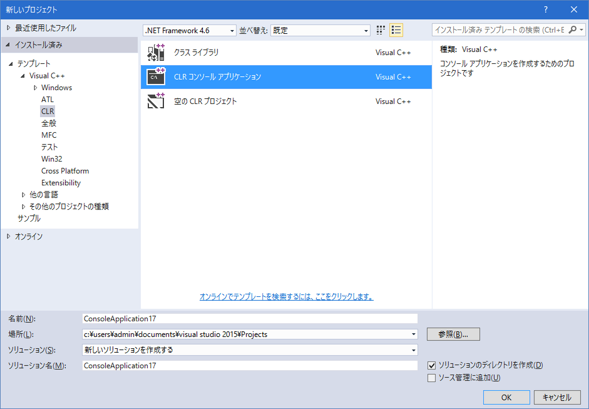
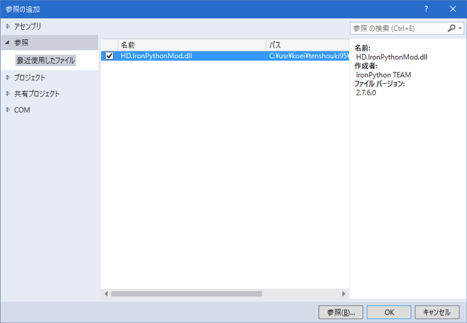
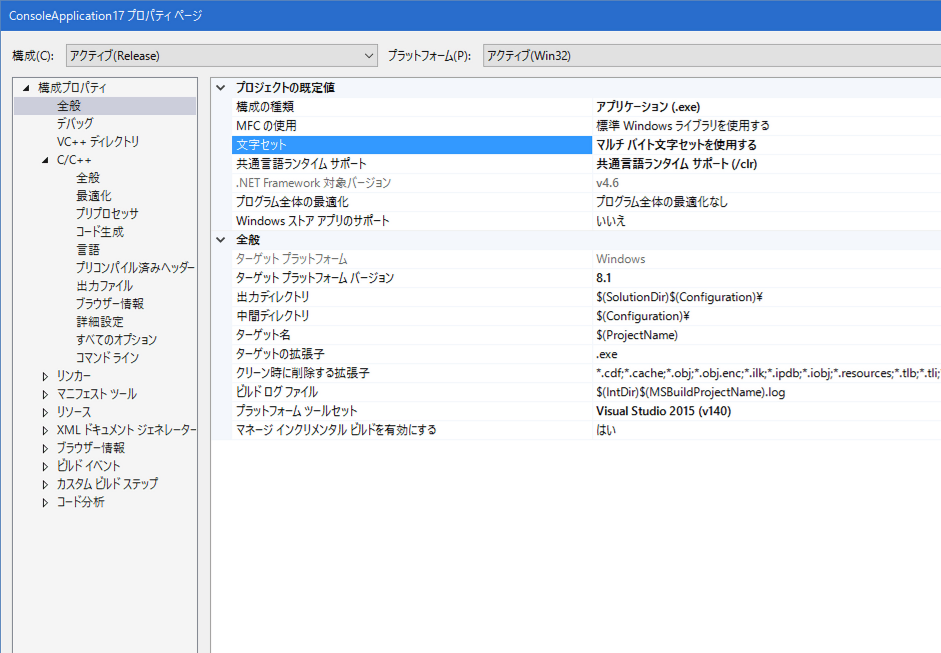

概要
ここでは、C++/CLIからIronPythonModを利用する例を記載しています。
一足飛びにHD.version.SDKで利用すると、本質が見えにくくなるかもしれません。
ここでは一旦汎用的なC++/CLIでの最小サンプルで雰囲気をつかんでみましょう。
プロジェクトの作成
適当にC++/CLI(CLR)のコンソールアプリケーションを作成してみましょう。
.NET FrameWorkのバージョンは、HD.version.SDKと合わせて4.6としておきましょう。

C#の時と同様に、HD.IronPythonMod.dllを参照に加えてください。

HD.veresion.SDKと類似の環境を想定するため、文字コードを「マルチバイト」の設定としましょう。

C++/CLI側
Python側
スクリプト側となるPython側のソースも用意します。
Pythonは「空白やインデント」も文法に含まれますので、注意してください。
C++/CLIの「マルチバイト」から呼ばれますので、「script.pyのソースコードの文字コードをShitJIS(=cp932)」で保存してください。
(テキストエディタなどで実際に確認してください。間違っているとSyntax Errorが出ます)
以上となります。
IronPythonがそのままcp932を取り扱えることは、HD.version.SDKで利用する上では
非常に大きなポイントとなります。
C++/CLIには残念ながら、C#のdynamicに相当するものがありません。
よって、C#ほどには、自然な記述でIronPythonを取り扱うことは出来ません。
しかし、pe->Execute<返り値の型>("IronPythonのコード", scope);
を取り扱うことで、文字列ベースで引数や関数などを操作し、
返り値は、.NET FramwWorkの型を介することで、比較的便利に情報をやり取りすることができます。